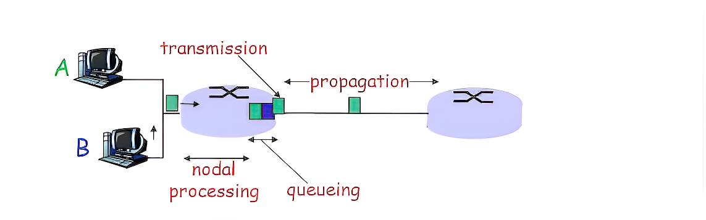
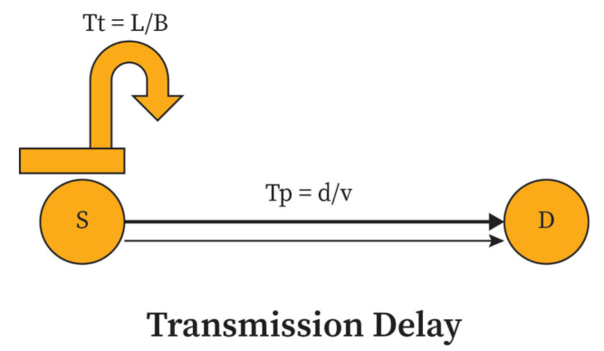
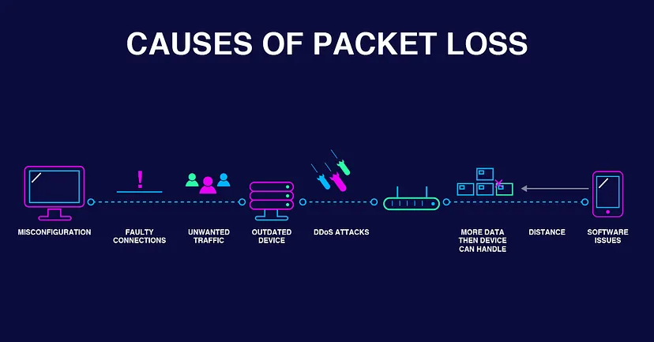
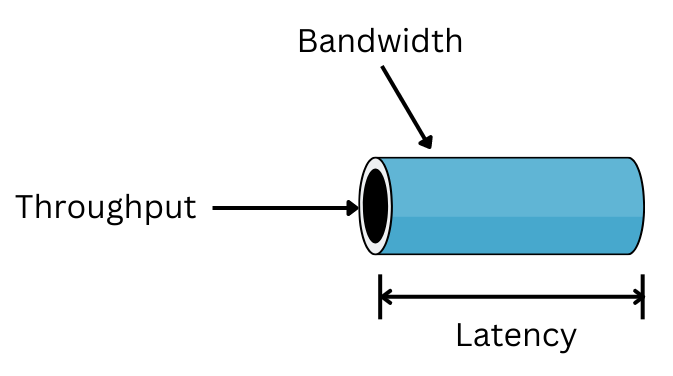

Packet-switched networks are the backbone of modern telecommunications, enabling the swift and efficient exchange of data between various devices and networks. In these networks, data is broken down into packets, which are then routed independently to their destination. Understanding the metrics of delay, loss, and throughput is paramount for assessing the performance and reliability of packet-switched networks. Delay refers to the time it takes for a packet to travel from the source to the destination, while loss occurs when packets are discarded during transmission. Throughput, on the other hand, is the rate at which packets are successfully delivered. These metrics play a critical role in optimizing network performance and ensuring seamless communication.
Delay is a critical metric in packet-switched networks, representing the time it takes for a packet to travel from the source to the destination. This delay consists of several components:
Transmission delay is described as the time taken to transmit a packet across a wire or data link. Therefore, transmission delay is not related with the distance between the source and destination. Rather, it deals with the size of the packet (number of data bits) and the capacity (data-rate) of the communication link.
The formula for transmission delay:
Tt = L/B
Where,
Tt is the transmission delay time
L is the number of bits in a packet
B is the capacity of the link (or) transmission medium

After the packet is transmitted to the transmission medium, it has to go through the medium to reach the destination. Hence the time taken by the last bit of the packet to reach the destination is called propagation delay.
Tp= Distance / Velocity
The delay that occurs when frames or cells wait in a device before being forwarded, and often a major component of latency. The time spent by packets waiting in buffers before being transmitted. It occurs when multiple packets compete for access to the same output link.
In general, we can’t calculate queueing delay because we don’t have any formula for that.
This delay depends upon the following factors:
In a network based on packet switching, processing delay is the time it takes routers to process the packet header. Processing delay is a key component in network delay.
During processing of a packet, routers may check for bit-level errors in the packet that occurred during transmission as well as determining where the packet's next destination is. Processing delays in high-speed routers are typically on the order of microseconds or less. After this nodal processing, the router directs the packet to the queue where further delay can happen (queuing delay).
Both queueing delay and processing delay doesn’t have any formula because they depend on the speed of the processor.
Packet loss occurs when one or more packets of data traveling across a computer network fail to reach their destination. Packet loss is either caused by errors in data transmission, typically across wireless networks or network congestion. Packet loss is measured as a percentage of packets lost with respect to packets sent.

Network congestion is a cause of packet loss that can affect all types of networks. When content arrives for a sustained period at a given router or network segment at a rate greater than it is possible to send through, there is no other option than to drop packets.
Packet loss can also result from faulty hardware, like modems, routers, or cables. Imagine the zipper on your luggage broke mid-trip. Something’s going to fall out along the way, isn’t it?
Similarly, out-of-date or malfunctioning software can also create packet loss. We’ve all heard the horror stories of people’s luggage going AWOL thanks to an airline system glitch tagging a bag for the wrong destination. Well, the same thing can happen to data packets.
Nefarious actors can also play a role in packet loss. Just like an opportunistic thief might steal a case off the carousel, distributed denial of service (DDoS) attacks and other malicious activity can interfere with network speed and create packet loss.
Sadly, sometimes “stuff” just happens, like a baggage handler accidentally leaving your suitcase on the cart while loading the plane. You can’t predict it, but it can happen. This is also the case with data packets. They come across many internet exchange points (IXPs) as they travel through the system, each providing a potential opportunity for damage or loss.
In denial-of-service attacks, hackers may cause a sudden and sharp increase in packet loss. The hacker's goal is to flood a system with so many requests that the network crashes. The victim's resources are so overwhelmed that it makes it difficult or impossible for anyone else to access them. An unusual spike in packet loss could be a sign of a cyber attack.
In packet switched systems where the load and the throughput always are equal (where packet loss does not occur), the maximum throughput may be defined as the minimum load in bit/s that causes the delivery time (the latency) to become unstable and increase towards infinity.

Network throughput refers to the rate of successful message delivery over a communication channel. It is usually measured in bits per second (bps), kilobits per second (kbps), megabits per second (Mbps), or gigabits per second (Gbps). Throughput is a key metric in evaluating the performance of a network and is influenced by various factors such as network congestion, packet loss, latency, and the bandwidth of the communication channel.
In the context of packet-switched networks, throughput represents the rate at which packets are successfully transmitted from the source to the destination. It is affected by factors such as the network's capacity, the efficiency of the routing algorithms, and the presence of any bottlenecks or congestion points in the network.
High throughput is desirable in network design as it indicates that the network can efficiently handle a large volume of data traffic. It is essential for ensuring smooth and reliable communication in modern networks, especially in applications that require high data transfer rates, such as video streaming, online gaming, and large file transfers.
Efficient management of delay, loss, and throughput is crucial for ensuring the performance and reliability of packet-switched networks. Various protocols and mechanisms, such as Quality of Service (QoS) techniques and congestion control algorithms, are used to optimize these metrics and improve overall network performance.
It's important to note that delay, loss, and throughput are interrelated. For example, a network with high throughput can experience increased delay and loss due to network congestion. Conversely, a network with low throughput can experience reduced delay and loss due to lower traffic.Network designers must carefully balance these metrics to ensure optimal network performance and user experience